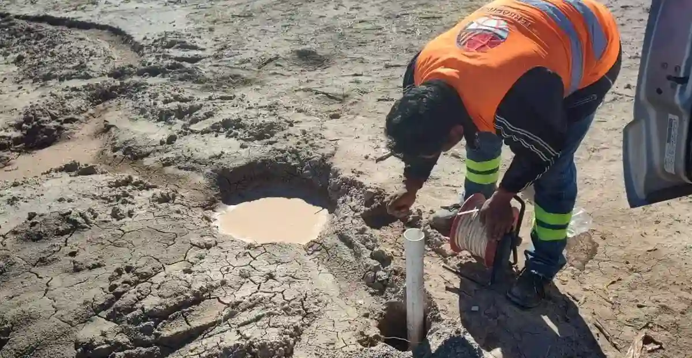

In Allentown, our geotechnical firm delivers comprehensive subsurface investigation, site characterization, and foundation design services tailored to the Lehigh Valley's unique conditions. We partner with developers, engineers, and contractors to provide reliable geotechnical analysis—from preliminary borings and laboratory testing to code-compliant reports and construction monitoring. Our local expertise ensures that every project, whether a commercial building, residential subdivision, or infrastructure improvement, benefits from thorough evaluation of soil behavior and groundwater conditions. By integrating advanced techniques like deep soil mixing for Improvement and expansive soil evaluation for problematic clays, we help clients mitigate risks and optimize designs for long-term performance.

Technical reference image — Allentown
Method and coverage
Allentown lies within the Great Valley section of the Ridge and Valley Province, underlain by sedimentary bedrock of the Martinsburg Formation (shale and graywacke) and the Jacksonburg Limestone. The region's glacial history has left a mantle of glacial till and outwash deposits, with localized lacustrine silts and clays from ancient glacial lakes. Typical soil profiles include a surficial layer of silty sand or gravelly loam over stiff to very stiff clayey silt till, often with cobbles and boulders. Groundwater is generally shallow, perched above the till or within fractured bedrock, requiring careful dewatering planning during excavations. Floodplain areas along the Lehigh River present alluvial sands and silts with high moisture content. Seismic hazards are low, but liquefaction potential exists in saturated loose sands near the river. Karst features are uncommon but possible where limestone is close to surface, necessitating electrical resistivity VES surveys to detect voids.
Regional considerations
Our firm brings consolidated regional experience across the Lehigh Valley, having completed numerous projects in Allentown's varied geologic settings. We maintain a calibrated laboratory for index and strength testing, including triaxial and consolidation tests on local soils. Our engineers coordinate closely with the City of Allentown's permitting office and local contractors to streamline approvals and construction. By adhering to Pennsylvania-specific building code requirements and ASTM standards, we deliver code-compliant reports that support efficient foundation design. This local knowledge allows us to anticipate challenges like shallow groundwater in glacial till or boulder obstructions during drilling.
All geotechnical work in Allentown follows U.S. standards, primarily ASTM International methods (e.g., ASTM D1586 for Standard Penetration Test, ASTM D2487 for soil classification) and ASCE/SEI 7-22 for seismic design criteria. We apply the International Building Code (IBC 2021) for foundation design and site class determination, and local amendments from the Pennsylvania Construction Code Act. Our reports reference ACI 318 for concrete foundations and FHWA guidelines for deep foundations where needed. Compliance with these standards ensures consistency, safety, and acceptance by local building officials.
Quick answers
What are the most common soil conditions encountered in Allentown?
The most common soils are glacial till (silty clay with sand, gravel, and occasional cobbles) overlying shale or limestone bedrock. In low-lying areas near the Lehigh River, you'll find alluvial sands and silts. Groundwater is often shallow, especially in spring, and can require dewatering for excavations deeper than 6–8 feet.
Do I need a geotechnical investigation for a small residential addition in Allentown?
While not always required by code, a limited subsurface investigation is highly recommended for additions with new foundations. Shallow groundwater or variable till conditions can lead to differential settlement. A few borings and laboratory tests provide the soil bearing capacity and help avoid costly repairs later.
What building codes govern foundation design in Allentown?
Allentown follows the 2021 International Building Code (IBC) with Pennsylvania-specific amendments. Seismic design uses ASCE 7-22, and soil testing follows ASTM standards. Local amendments may require additional documentation for floodplain construction or steep slopes. Our reports are prepared to meet these requirements.
How deep do typical test borings go for commercial projects in Allentown?
For most commercial buildings, borings extend to at least 30–40 feet or until competent bedrock or dense till is encountered. Deeper borings (50–60 feet) may be needed for heavy loads or if deep foundations like piles or drilled shafts are considered. Our recommendations are tailored to the specific site geology and structural loads.
Location and service area
We serve projects across Allentown and its metropolitan area.